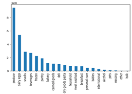
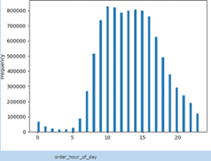
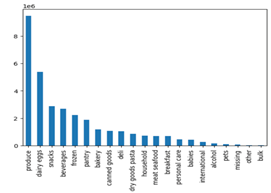
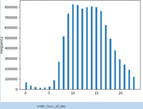
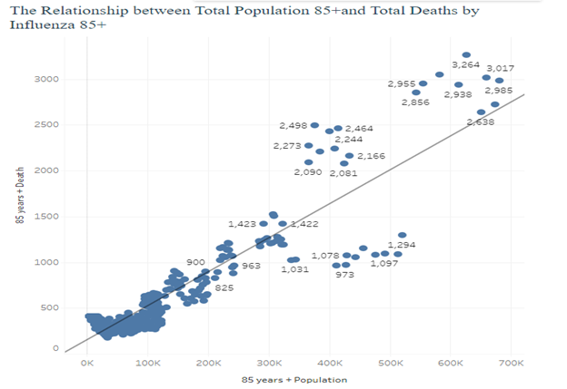
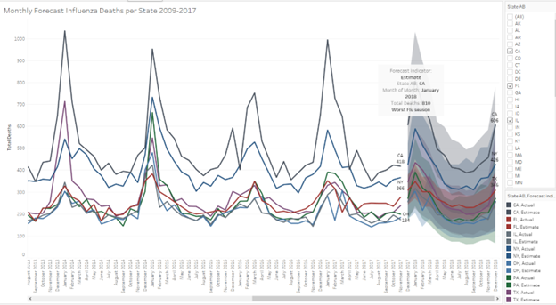
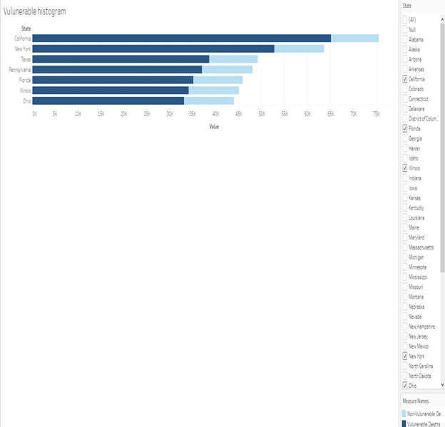

Titi Adigun
Data Analyst skilled in Tableau, SQL and Python
Welcome to My Portfolio

Data Analyst skilled in Tableau, SQL and Python
Welcome to My Portfolio
Objective As an analyst for Instacart, an online grocery store that operates through an app. Instacart already has a very good sales, but they want to uncover more information about their sales patterns. Our task is to perform an initial data and exploratory analysis of the segment based on the provided criteria. Context The Instacart stakeholders are most interested in the variety of customers in their database along with their purchasing behaviours. They assume they can’t target everyone using the same methods, and they’re considering a targeted marketing strategy. They want to target different customers with applicable marketing campaigns to see whether they have effect on the sales of their products. Questions from sales and marketing team 1. What are the busiest days of the week and hours of the day? 2. What hours were most money spent? 3. Are certain types of products more popular than others? 4. What is the analysis of the types of customers based on? 5. What is the customers’ loyalty? 6. Which region are the most loyal customers? 7. The age and family status of the loyal customers? 8. The demographic classification of the loyal customers? Data • “The Instacart Online Grocery Shopping Data 2017” Accessed from http://www.instacart.com/datasets/grocery-shopping-2017 • Data Dictionary and python scripts https://1drv.ms/u/s!AmMGMFF1a6fnek-QFaQcHYvQbb8?e=0WZaea Python skills • Importing Libraries • Importing and Exporting datasets • Descriptive analysis • Data wrangling • Data merging • Deriving variable • Grouping data • Aggregating data • Visualizations with Python libraries • Reporting in Excel • Population flows Bringing the datasets together I started the project by cleaning and organizing the datasets before merging everything to final dataset. 1. Clean “orders” dataset 2. Clean “Products” dataset 3. Transponder Departments dataset 4. Clean “customers” dataset 5. Merge everything together 6. Column derivations and aggregations to answer Sales and Marketing questions
Challenges 1. While working with large sets of data Jupyter Notebook slowed down dramatically and didn’t produce necessary outputs. Solution: After doing some research and talking to my tutor, I have learned my computer setting weren’t allowing Anaconda and Python libraries to update. I had to reinstall all the tools again to proceed with my analysis. 2. Towards the end of my project, I wanted to look at how pupolar each department is among customers. However, I only had the department Id’s in the merged dataset. Solution: I have to pull the departments datasets and merge with products_orders dataset to replace department_id with the department names. 3. Test customer datasets provided by CareerFoundry had the same customer numbers in each State within the US. This makes it difficult to analyze which States have more customers than the other and this caused a data measurement bias. Solution: I did not analyze customer’s numbers based on their states, they were measured in regions. Some of the findings. Loyal customers order every 6days. Most orders are ordered between 9.00am & 5.00pm Loyal customers order every 6days Produce is the most popular department
 




Insights Null Hypothesis: * The mortality rate from influenza of vulnerable groups is equal to or less than mortality rate from non-vulnerable groups. Alternative Hypothesis: * The mortality rate from influenza of vulnerable groups is more than mortality rate from non-vulnerable groups. Findings: Using a standard level of significance of 0.05 to conduct statistical analysis and finding a p-value of 7.121247E-24, we can reject the Null Hypothesis and accept the Alternative Hypothesis. With 95% confidence, this confirms that the mortality rate from influenza of vulnerable groups is more than mortality rate from non-vulnerable groups. b. Visual analysis For presentation to our stakeholders, visualization is necessary for better interpretation.

The above indicates that influenza occurs seasonally and not throughout the entire year. For all the states, influenza season peaks at winter season (December - February). The winter period is followed by the spring season, followed by autumn and lastly summer..


The above shows the states with the number of influenza deaths and the number of vulnerable deaths in those states.

5. Project reflection
Influenza Deaths- There are 5, 508 missing values under Ten-Year Age Groups column that were coded as 'Not Stated', which is 8.33% of the values under this group. The approach of 'Do nothing' was taken because removing the records/variables or imputing central tendency/random values does not work here as the missing data makes up for more than 5% of the total values within the data set and this could affect the data integrity.
There are 54, 013 missing values under Deaths column that were coded as 'Suppressed'. These accounts for 81.72% of the values under this group. Because the percentage is very high, I replaced the ‘Suppressed' values with the average (34) of the available data, in other to keep the data integrity.Population Data- Some of the county’s names in the state of Puerto Rico (PR)-were misspelled as: 1. A?asco. 2. Bayam?n 3. Can?vanas 4. Cata?o 5. Comer?o 6. Gu·nica 7. Juana D?az 8. Lo?za 9. Manat? 10. Mayag?ez 11. Pe?uelas 12. R?o Grande 13. Rinc?n 14. San Germ·n 15.San Sebasti·n Municipios. With educated guesses, these were corrected as follows: 1.Anasco 2.Bayamon 3. Canovanas 4. Catano 5. Comerio 6. Guanica 7. Juana Diaz 8. Loiza 9. Manati 10.Mayaguez 11.Penuelas 12.Rio Grande 13.Rincon 14.San German 15. San Sebastian Municipios
A total of 1647 values are blank under the Year column from 2009 to 2017. This accounts for 9.33% of the values. The approach of 'Do nothing' was taken because removing the records/variables or imputing central tendency/random values does not work here as the missing data makes up for more than 5% of the total values within the data set and this could affect the data integrity. 6. RecommendationsAccording to the season forecast for influenza, winter and spring seasons will continue to be the most affected seasons.
Also, it has been established that the mortality rate from influenza of vulnerable groups is more than the mortality rate from the non-vulnerable groups; more medical staff should be deployed to the states that has more vulnerable groups. Also, each state with different rate of vulnerable groups should be grouped into either red alert or green alert zones so that more focus will be on the red alert zones.
We will recommend that these 7 states- California, New York, Texas, Pennsylvania, Florida, Illinois, and Ohio should be the first focus of the medical staffing agency during the seasons of winter and spring.
We will also recommend that everyone, especially the vulnerable population, be given vaccine. * To view additional documents in my portfolio, head to the following links:• Story Board Link https://public.tableau.com/app/profile/titi.adigun/viz/PREPARINGFORINFLUENZASEASON2/Fluseasonandgettinghelp?publish=yes
• Influenza Presentation Outline https://www.dropbox.com/s/cl8n8694gqajwo0/Influenza%20Presentation%20Outline.pdf?dl=0 • Video Presentation Link https://vimeo.com/770096062
titimycareer@gmail.com | +13067155038 | Saskatoon, Canada | https://www.linkedin.com/in/titi-adigun-55b69123b/ | https://titimycareer.github.io/titi.adigun Data Analyst with a background in customer service, banking, and administration. Experienced in focusing on the important approaches used to solve issues/problems from a customer’s perspective while ensuring company profitability. Skilled in organizing, interpreting, and reporting data. Key projects involved forecasting needs through analyzing past trends, internal movement, and projected growth.